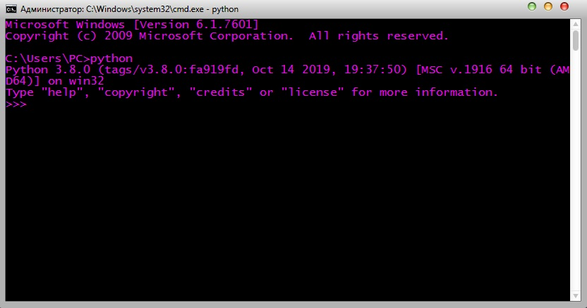
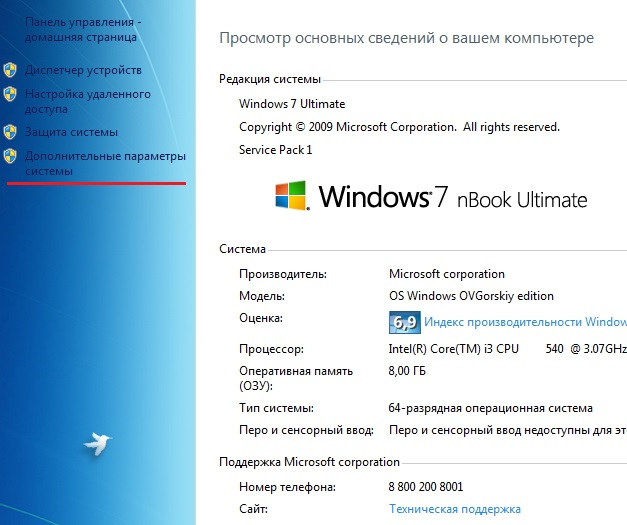
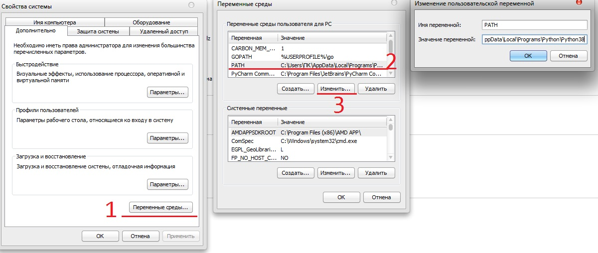
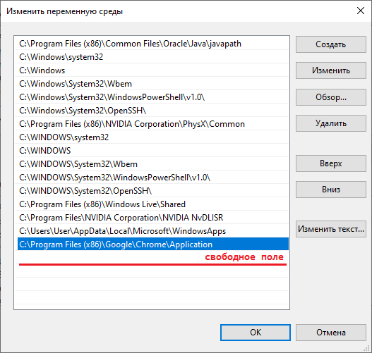
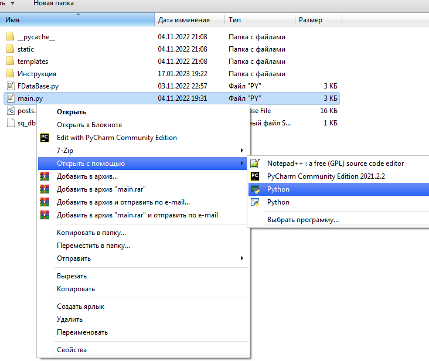
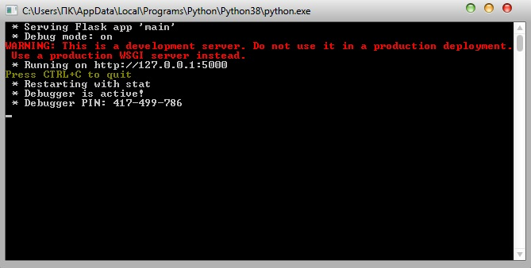

Перед запуском сервера, следует удостовериться в наличии
нужных библеотек. Скорее всего, не хватает одной - Flask. Проверим ее наличие
с помощью командной строки, чтобы ее открыть следует
В открывшемся окне написать python,
и нажать Enter. Должен высветиться такой результат:

Если выдало ошибку: "python" не является внутренней или внешней
командой, исполняемой программой или пакетным файлом.
Значит, python не установлен.
Далее, нужно выйти из открывшегося интерпретатора, для этого
следует набрать exit(), и нажать Enter.
В командной строке нужно написать pip.
Если
мы получили схожую ошибку: "pip" не является внутренней или внешней
командой, исполняемой программой или пакетным файлом. Нужно будет добавить
путь до pip. Если ошибки нету, приступаем к следующему шагу
Если ошибка все же имеется, следует:
В появившемся окне, ищем папку Scripts, заходим в нее и копируем путь до папки.
Нажимаем Win, и вбиваем туда "система". Нажимаем на этот раздел "Дополнительные параметры системы"

Далее делаем по инструкции:

У Windows 10 высветиться другое окно, там нужно будет навести мышь на конец списка
нажать кнопку "Изменить" и туда вставить путь до папки Scripts

В Windows 7 встаем в конец текста, ставим ";", и вставляем путь до папки Scripts
Нажимаем ок, и выходим. Снова запускаем командную строку, и проверям результат.
Набираем pip, если ошибок нет переходим на следующий этап.
Набираем в командной строке pip install Flask.
Ждем окончания загрузки, после чего заходим в главную папку с сайтом, там запускаем
файл main.py

Откроется такое окно

После чего заходим в браузер, и в строке URL нужно ввести
http://127.0.0.1:5000/ Затем нажать Enter